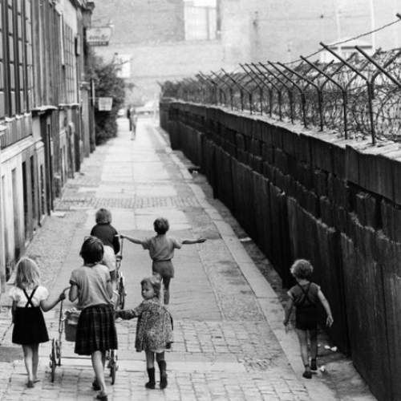

เยอรมนี (Germany)
-ในช่วงสงครามเย็น เยอรมนีถูกแบ่งเป็น 2 ส่วน คือส่วนของฝ่ายสัมพันธมิตรทางฝั่งตะวันตก และส่วนของสหภาพโซเวียตทางฝั่งตะวันออก ส่วนรัฐบาลเยอรมนีได้เสียงเพียงเล็กๆ น้อยๆ เท่านั้น จนกระทั่ง ค.ศ. 1949 เมื่อมีการก่อตั้งสองรัฐเกิดขึ้น ได้แก่
•สหพันธ์สาธารณรัฐเยอรมนี (Federal Republic of Germany) หรือเยอรมนีตะวันตก ปกครองด้วยระบอบประชาธิปไตยแบบรัฐสภา ใช้ระบบเศรษฐกิจแบบทุนนิยม มีโบสถ์อิสระ และมีสหภาพแรงงาน
•สาธารณรัฐประชาธิปไตยเยอรมนี (German Democratic Republic) หรือเยอรมนีตะวันออก ปกครองด้วยลัทธิมากซ์–เลนิน ซึ่งเป็นอุดมการณ์ขนาดย่อม ปกครองโดยสหภาพโซเวียตและอิงพรรคเอกภาพสังคมนิยมเยอรมนีเพื่อที่จะรักษาเยอรมนีตะวันออกให้อยู่ในเขตอิทธิพลของสหภาพโซเวียต
-ในปี ค.ศ. 1955 เยอรมนีตะวันตกกลายเป็นประเทศที่เจริญรุ่งเรืองทางเศรษฐกิจมากที่สุดในยุโรป ขณะที่เศรษฐกิจของเยอรมนีตะวันออกหยุดนิ่ง เพราะส่วนใหญ่จัดขึ้นเพื่อตอบสนองความต้องการของสหภาพโซเวียต โดยมีสายลับคอยควบคุมอย่างแน่นหนาบริเวณกำแพงเบอร์ลินที่สร้างขึ้นในปี ค.ศ. 1961 ไม่ให้ผู้ลี้ภัยเดินทางไปยังเยอรมนีตะวันตก เยอรมนีกลับมารวมชาติอีกครั้งในปี ค.ศ. 1990 จากการยุบพรรคเอกภาพสังคมนิยมเยอรมนีที่ปกครองเยอรมนีตะวันออก
